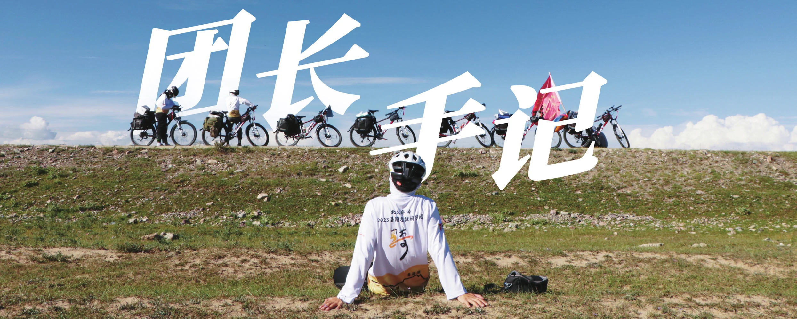
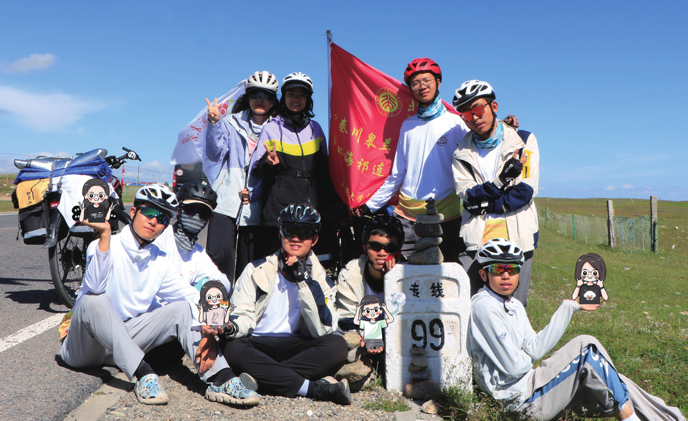
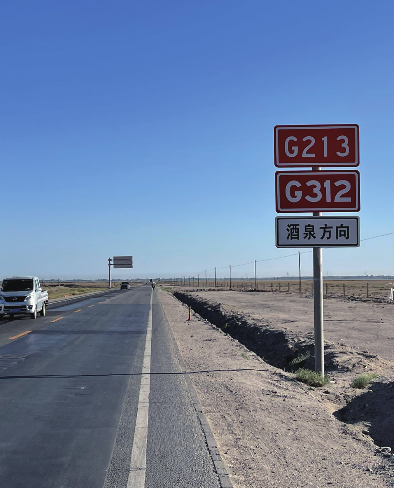
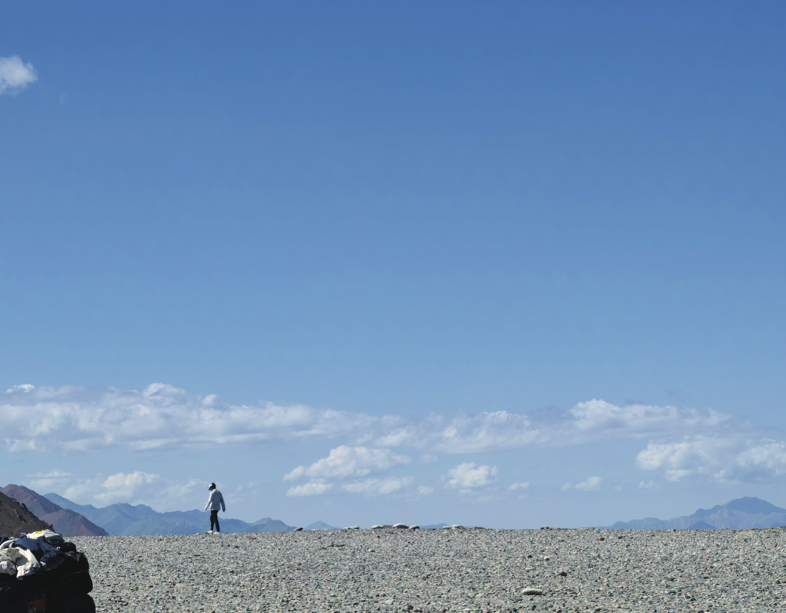
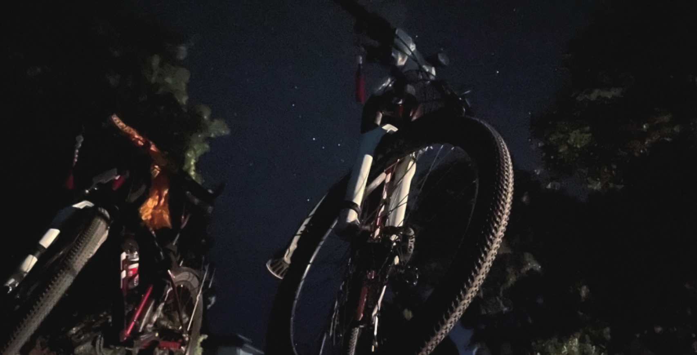

团长手记
原刊67


基本概况
北京大学自行车协会 2023 暑期远征骑行团于 2023 年 6 月 5日成团，团队成员一共 13 人。我团于 6 月 11 日召开第一次团会，6 月 23 日召开第二次团会。7 月 19 日 10 人从北京出发，2人从别处出发，7 月 20 日在西安汇合。休整 3 天后，7 月 23日从西安正式出发，开始骑行。7 月 23 日二二因伤在西安离队，7 月 28 日三姐因学业安排在固原追队，8 月 14 日小八因伤在祁连离队。8 月 12 日 15:25 前旗抵达暑期远征海拔最高点大冬树山垭口。8 月 17 日到达终点嘉峪关，8 月 18 日散团。暑期总计 30 天，其中骑行日 19 天，休整日 11 天，共有西安（3 日）、陇县、固原、兰州、西宁、黑马河（半日）、刚察（2 日）、祁连、嘉峪关 9 个休整点。因伤病部分成员坐车 2 次。
人员组成
团队成员一共 13 人，男女比例为 7：6，本科生 12 人，预科生 1 人。团众数量和比例基本令人满意，但是排行前四的均为女生，第五即为团长，因此团队内缺少能够扮演“大哥”角色的人（团长本身虽也是“大哥”，但是可能分身乏术）。再加上平均年龄偏小，大一本科生占大半，导致团内面临一些需要有人主动站出来承担责任的情况，难以有合适的角色，也导致在团队出现过度放纵行为、方向偏离的时候难有一股有力的、让其他团众信服的力量去纠偏、唱黑脸，若以上这两件事情全部由团长亲历亲为，则容易形成团长和其他团众之间的隔阂，给其他团众形成刻板印象，难以调动所有人的积极性。
带团理念
这一部分源自于我在团长公布现场的团长陈述。包括我预想的带团风格、我对暑期的预期，这主要由三个关键词构成。
一，张弛有度。安全是我们能够作为一个团队完整地走完这将近 2000 公里的前提条件。在成团之后，尤其是暑期路上，我将杜绝一切对团众们的人身、财产安全产生威胁的举动，也希望大家严格恪守这条红线。在这个基础上，我希望团内风格应该是融洽和睦、欢乐放松的，希望大家能够最大限度地解放天性去享受暑期。


二，相互信任。从成团的那一刻开始，我们就将作为一个整体去克服接下来走完这 2000km需要面对的所有挑战，尤其是今年高原路段较长的情况下。无论何时何地，我们都要站在一条战线上。我希望我的未来团众们，你们能多一些沟通、理解与信任，少一些疏离、隔阂与防备。希望你能慷慨地伸出援手，也能坦然地接受帮助。
三，主动创造。虽然我是团长，但是这场远征不是由我一个人决定的，这是我们所有人一起去创造的。我希望我未来的团众们能够以主人的姿态去参与羁绊，去发现惊喜，去创造感动，去践行北大车协的十六字口号。再具体一点，我希望你们能够主动去关注、承担一些事情，能主动思考怎样可以让我们变得更加和谐坚强。
行前准备
我团的行前准备各项事务主要是通过两次全体团会串联起来的。第一次的主要内容有公布后续的安排（包括第二次团会、试车拉练、包车托运等）、路线日程讨论与分组细化路线信息、全程职务安排与任务讲解、单日职务与大致时间线介绍、团队的原则与底线等。第二次的主要内容有各小组讲解对应部分的路线详细信息、队医/押后/物资/摄影等各项负责讲解注意事项与后续的安排。可以说这两次团会起到了提纲挈领的作用。第一次团会主要由我来讲解各项安排，并将各种事项布置下去。在第二次团会开始之前，我会依次私戳大家进行验收、提出改进建议。第二次团会主要是团众们根据自身承担的职务和分工来向其他人讲解，而我则是作为倾听、主持、补充的角色。这样一来，几乎所有团队的杂事琐事都可以高效地得到解决，并且可以极大程度的调动团众们的积极性和参与感，团长也不用什么事都亲力亲为。
关于职务安排，我团的原则是意愿优先，各得其所。在发问卷了解所有人的职务意愿后，我私戳了他们聊天，根据个人的意愿、能力、特长、性格等因素安排全程职务。我的目标是尽可能达到团队内每个人都在做自己喜欢的事情、所有需要的事情都有人主动去做的状态，也就是让所有人都找到合适的角色与位置。关于摄影与视频导演，我认为应该在行前就根据行程、沿途风景、团众组成等因素构思出暑期视频的框架，主动去思考拍什么风景、拍什么人、怎么拍、什么时候拍等等，而不是上路之后全靠即兴发挥，否则剪视频的时候可能就会一筹莫展，缺乏条理。关于队医负责，由于团内唯一参加队医组考核且能骑全程的队医小妹经验不是很充足，且今年高原路段较长、最高海拔较高，高原反应的风险较大，因此我另外安排了团内一位已通过队医组考核但是需要追队的高年级医学生三姐来作为“队医负责助理”，由两人配合完成前期准备工作。
路线与日程
本年度的暑期远征路线为西安-兰州-青海湖-嘉峪关。总体来讲，此路线里程约2000km，骑行总天数为 19 天。途径陕西、宁夏、甘肃、青海四个省级行政区，经历关中平原、黄土高原、青藏高原、河西走廊等地形区。里程并不算长，但是有将近 1/4 的路程在海拔 3000m以上的高原地区，且最高海拔可达 4120m，所以整体强度仍然较大。路线途径点选择方面，有以下几个特殊考虑。第一，绕路固原：由于我团三姐暑假放假时间较晚，需要追队，综合考虑追队者与大队日程、追队时大队骑行里程、团队整体骑行节奏、追队点交通便利程度等因素，遂将追队点定在固原市。第二，环青海湖：在途径青海湖时，没有选择里程最短的海晏-刚察，而是选择了海晏-江西沟-黑马河-刚察，进行了逆时针环青海湖 3/4圈，这样可以很大程度上丰富骑行体验。其余途径点选择均基本按照不刻意绕路、尽量选择级别最高的公路、单日里程与爬升合适、住宿点聚落大小合适这四大原则确定。


具体来讲，按照强度、地形等因素划分，路线可以大致分为五个阶段。第一阶段：西安-固原，可称为复健期。此段路线的特点是大部分处于关中平原地区，地势起伏较为平缓，大坡较少，海拔较低，气候极热。团队成员在这段路上骑行体验较为轻松，可以较好地适应暑期的作息、职务，找到适合自己的骑行节奏，也在一定程度上为后面强度的拔高奠定基础。
第二阶段：固原-西宁，可称为磨合期。进入黄土高原西南缘之后，地形变化较为明显，多了许多起伏路和大坡。相比起第一阶段的骑行的舒适节奏，这一阶段逐渐出现了较大的单日里程和较为密集的爬坡。因此团队成员可以适当锻炼磨合自己的体能。而且由于骑行总里程的积累，团队里难免会出现一些小摩擦、分歧（比如说是否有必要进行破风队形骑行），利用这一阶段可以磨合整个团队的默契。
第三阶段：西宁-刚察，可称为高原适应期。西宁之后，海拔随即来到了 3000m 以上。这一阶段平均海拔在 3200m 左右，总里程约 365km，且几乎全程大平路。所以只要控制好单日里程在适当数值，这一阶段就会是成员们适应高原骑行节奏、判断自身对高原反应耐受性的大好时机。再者这段路程全程环绕青海湖，景色非常优美，可以有很好的骑行体验。
第四阶段：刚察-民乐，可称为高光期。这一阶段虽然只有三天，但是囊括了海塔尔山（3869m）、大冬树山（4120m）、俄博岭（3685m）三个大垭口。而且由于高海拔，这三天平均气温较低。以及这一阶段拥有极其美丽壮阔的高原景观。故可以说这三天是强度、风景的高光时刻。也是在这一阶段，在共同困难的作用下，团队默契、氛围得到了极大提升。


第五阶段：民乐-嘉峪关，可称为恢复期。在民乐之后，就离开高原，来到了一路放坡、缓下进入河西走廊的阶段了。这段路程的特点是单日里程大，沿途的聚落较为稀疏且城镇化水平不高，景观较为单一，气候较为炎热干燥，所以对体力耐力的要求较高，因此团队的骑行体验较为单一枯燥。
问题总结与策略
骑行途中的行程调整。第一次是在西海镇的团会上，我们开会讨论了环青海湖过程中是否要改变其中相邻两天里程的分配以获得在黑马河镇观看日出的机会。支持更改的因素有可以增加骑行外的观景体验、在连续四天骑行过程中获得半日休整的机会，不支持的因素有黑马河-刚察的单日里程过长不适合高原骑行。在所有团众一起讨论、分析了可能的利弊关系后，我们采取投票的方式，最后以 10：2 的票数决定更改方案。第二次是在刚察，由于三姐前几天雨骑后发烧仍未退去、小八膝盖摔伤需要时间观察能否继续骑行、天气预报显示到达刚察后的两天均有降雨，决定将在刚察的一天休整改为两天。不过这样也直接影响了暑期结束时间推迟一天，为了不影响大家后续安排，我们经过讨论对民乐之后的行程也作了更改。由原来的民乐—临泽（一日休整）—清水—嘉峪关，改为民乐—南华—清水（半日休整）—嘉峪关，省出一天的时间。
严重摔车事故。在西海镇—江西沟的骑行过程中，在经过一个狭窄的泥泞道路时，两辆车并排进行导致磕碰，其中小八摔伤，膝盖被倒在其身上的车压到，后确诊为软组织挫伤。剩余团众中，队医负责及助理负责检查小八伤势，在确定无法继续骑行以及附近镇子上没有合适的医院后，剩余团众同时进行打车、打 120，最后出租车先行到达，由三姐、六哥陪同坐车前往最近的三级医院。剩下的大队通过牵车、双驮包到达当日住宿点。在医院检查后，三人在附近找酒店住下并在第二天打车至黑马河汇合，之后小八由另外两人陪同继续坐车前往下一个休整点刚察。在刚察休整两天，经观察确认伤势不能再耐受骑行，并在小八本人考虑、同意后，选择坐后援车跟队翻两座垭口，在祁连县离队。
破风队形。由于第一阶段的关中平原、第五阶段的河西走廊均有大段的平路或缓下，因此进行破风队形骑行可以节省整个团队的体力，适当加快骑行节奏，更可以培养出团队的默契与配合程度。于是在复健、磨合的阶段，我适当要求大家进行跟骑，熟悉破风队形的节奏。但是由于团众们体力分布不是很均匀，以及路况起伏，出现了队伍中断、与前车追尾、消耗大量精力等问题，难以找到一个合适的速度保证所有人都有一个舒适的骑行体验。于是在某次团会上，大家通过讨论，总结出了这样一条原则：单日里程较长需要赶路、存在长距离的平路或者缓下路段、没有密集的红绿灯路口的情况下，才进行整个队伍的整体破风骑行，其他情况下可以视情况在小范围内跟骑。
追离队。共计三人追离队。二二在成团后被确诊为膝盖前交叉韧带断裂，需要进行手术，不能在短时间内恢复至可以耐受 2000km 骑行的状态，故计划在西安和大家一起游玩后离队。三姐由于医院放假较晚在固原追队，小八由于膝盖受伤在祁连离队。因此，大队人数最少时仅有 11 人，于是不得不进行职务合并，比如队记、摄影合并，社考、DV 合并。另外，追队者如何融入其他团众们已经形成的气氛、怎么安抚离队者的情绪也是需要关注并且花心思解决的问题。


高原反应。本次暑期全程仅有两例轻微高反的情况，且均在吸氧、保暖、补糖后完全缓解。高原反应重在预防而不是发生后的措施，应杜绝可能会诱发、加重高原反应的行为如突然猛蹬、着凉、低血糖等。
写在最后
最后，让我用九九在暑期日志开篇写的话作为结束：
“你绝不是圆满 / 因为圆满是对旅途的墓志铭
你也不会是永远 / 永远是虚无的谎言
……
正是因为缺憾 / 才有了日后弥补的动因
正是绝非永远 / 我们才会捧起每一枚相聚的时间”
长路未央，行者无疆。很荣幸能够作为团儿/五哥/大哥/土豆……和大家共享这整个夏天，我会永远记得我们曾经一起紧握的倔强！祝愿大家能继续沿着不断延伸的路，继续走下去。